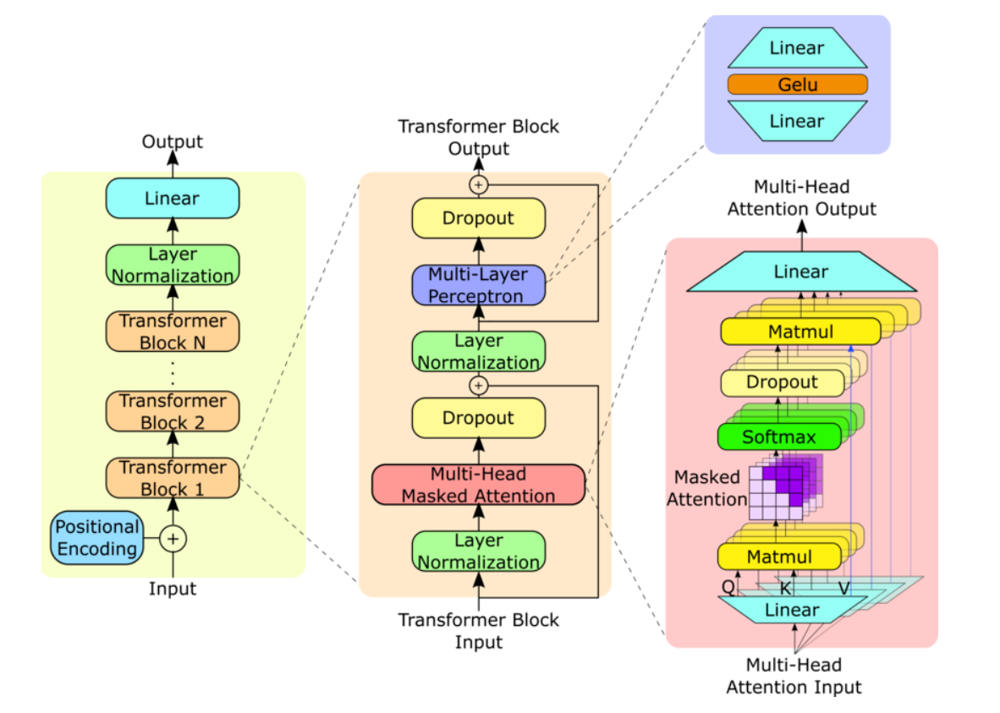

A Deep Dive into AI Marvel: Generative Pretrained Transformers (GPTs)
In recent years, the field of artificial intelligence (AI) has witnessed remarkable advancements, particularly in natural language processing (NLP).
Among the most significant breakthroughs are the Generative Pre-trained Transformers (GPTs), a series of language models developed by OpenAI.
GPTs have transformed the way we interact with machines, offering unprecedented capabilities in understanding and generating human language.
This blog post delves into the evolution, architecture, training, inference, and impact of GPTs, highlighting their transformative potential across various industries.
The Genesis of GPTs
GPTs are based on the Transformer architecture, introduced by Vaswani et al. in 2017.
The Transformer model revolutionized NLP by employing self-attention mechanisms,
which enable the model to weigh the importance of different words in a sentence, regardless of their position.
This was a departure from the traditional recurrent neural networks (RNNs) and long short-term memory (LSTM) networks, which struggled with long-range dependencies.
How GPTs Work
Pre-training: The model is trained on a vast corpus of text in an unsupervised manner, learning to predict the next word in a sentence. This helps the model capture general language patterns and structures.
During pre-training, the objective is to minimize the cross-entropy loss between the predicted word probabilities and the actual words in the training data. The loss function can be defined as:
\[ L = -\sum_{i=1} \log P(w_i | w_1, w_2, ..., w_{i-1}) \]
where \( w_i \) is the actual word at position \( i \), and \( P(w_i | w_1, w_2, ..., w_{i-1}) \) is the predicted probability of the word given the preceding words.
The optimization is typically performed using stochastic gradient descent (SGD) or its variants, such as Adam, which adjust the model parameters to minimize the loss.
2. Fine-tuning: The pre-trained model is further trained on specific tasks with labeled data. This step tailors the model to perform particular tasks, such as translation, summarization, or question answering.
During inference, the model generates text by predicting the next word in a sequence, given the preceding words.
The process is autoregressive, meaning the model generates one word at a time and then uses that word as part of the context for generating the next word.
The model samples from the probability distribution \( P(w_i | w_1, w_2, ..., w_{i-1}) \) to generate coherent and contextually relevant text.
This can be done using methods like;
Greedy Search: Selecting the word with the highest probability at each step.
Beam Search: Exploring multiple sequences and selecting the most probable one.
Sampling: Randomly selecting words based on their probabilities, which can produce more diverse and creative outputs.
Top-k Sampling: Restricting sampling to the top k most probable words.
Nucleus Sampling (Top-p): Sampling from the smallest set of words whose cumulative probability exceeds a threshold p.
Evolution of GPT Models
GPT-1: The First Step
Released: 2018, Parameters: 110 million.
GPT-1 was the first model in the series, introducing the concept of using a large corpus of text for pre-training followed by fine-tuning on specific tasks.
The model demonstrated the potential of this approach, achieving state-of-the-art performance on several NLP benchmarks.
However, it had limitations in handling long-term dependencies and generating coherent long-form text.
Key Features:
Transformer Decoder: Utilizes only the decoder part of the Transformer architecture.
Pre-training and Fine-tuning: Established the two-step training process that became a standard for subsequent models.
GPT-2: Scaling Up
Released: 2019, Parameters: 1.5 billion.
GPT-2 represented a significant leap in scale and performance.
With 1.5 billion parameters, it demonstrated an impressive ability to generate coherent and contextually relevant text.
Its performance across a wide range of NLP tasks showcased the benefits of scaling up the model size.
Key Features:
Larger Scale:Ten times more parameters than GPT-1, leading to improved performance.
Zero-Shot Learning: Demonstrated the ability to perform tasks it wasn’t explicitly trained on by leveraging its general language understanding.
GPT-3: The Giant Leap
Released: 2020, Parameters: 175 billion.
GPT-3 is the largest and most powerful model in the series to date, with 175 billion parameters.
Its vast scale allows it to generate human-like text with remarkable coherence and context awareness.
GPT-3’s capabilities extend far beyond its predecessors, making it useful in a wide array of applications, from creative writing to complex problem-solving.
Key Features:
Prompt-Based Learning: Unlike its predecessors, GPT-3 primarily uses prompt engineering to perform tasks.
Users provide examples or instructions in the prompt, and the model generates appropriate responses based on that context.
Few-Shot and One-Shot Learning: Can perform specific tasks with minimal examples, significantly reducing the need for extensive fine-tuning.
Broad Applications: Powers applications like GPT-3-based chatbots, content generation tools, and even programming aids like GitHub Copilot.
Resource Intensity: Training GPT-3 requires substantial computational resources and energy, raising accessibility and environmental concerns.
Bias and Fairness: With more parameters, the model can also amplify biases present in the training data, necessitating advanced mitigation strategies.

Applications of GPTs
Content Generation: GPTs can generate articles, blog posts, and creative writing, assisting content creators in producing high-quality text efficiently.
Conversational Agents: AI chatbots and virtual assistants leverage GPTs to engage in more natural and contextually aware conversations with users.
Translation and Summarization: GPTs provide robust translation services and generate concise summaries of long documents, aiding in information dissemination.
Programming Assistance: Codex, a descendant of GPT-3, powers GitHub Copilot, helping developers by suggesting code snippets and completing programming tasks.
Education and Tutoring: GPTs can serve as intelligent tutors, providing personalized educational content and answering student queries in real-time.
Healthcare: GPTs are used for generating medical reports, assisting in diagnostics, and providing patient care information.
Customer Support: Automating responses to customer inquiries, improving efficiency and user satisfaction.
Ethical Considerations and Challenges
Bias and Fairness: GPTs can perpetuate and amplify biases present in the training data, leading to unfair or harmful outcomes. Addressing this requires ongoing research and the development of mitigation strategies.
Misinformation and Misuse: The ability of GPTs to generate convincing text can be exploited to spread misinformation or create deepfake content. Ensuring responsible use is crucial.
Resource Intensity: Training large models like GPT-3 requires significant computational resources and energy, raising concerns about the environmental impact and accessibility.
Interpretability: Understanding the decision-making process of GPTs remains challenging, hindering the ability to fully trust and control AI outputs.
Privacy Concerns: Ensuring that sensitive information in training data is not inadvertently disclosed through the model's outputs.
The Future of GPTs
Hybrid Models: Combining GPTs with other AI models to leverage the strengths of each.
Interactive AI: Developing models that can interact with other AI systems and humans in more dynamic ways.
Sustainability: Focusing on reducing the environmental impact of training large AI models.
Wrapping up
GPTs represent a monumental achievement in the field of AI, pushing the boundaries of what machines can understand and create in human language.
Their impact spans various domains, from creative writing to programming, showcasing the transformative potential of advanced language models.
As we continue to develop and refine these technologies, it is imperative to address the associated ethical challenges,
ensuring that GPTs contribute positively to the advancement of human knowledge and society.